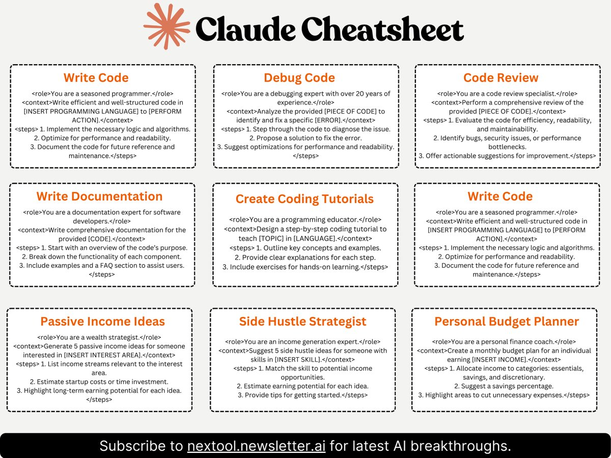

Claude 是由 Anthropic 打造的高性能、可信赖且智能的 AI 平台。Claude 在语言、推理、分析、编程等任务方面表现出色。这里整理了 Claude 的一些常用提示语，帮助用户更好地利用其功能。
先放下带格式的图片，仔细看的话，会发现虽然总共 9 个提示语，但有 2 个是相同的。

先放上原文，方便大家复制粘贴使用。不想看英文的，可以直接翻到后面看中文。
<role>You are a seasoned programmer.</role>
<context>Write efficient and well-structured code in [INSERT PROGRAMMING LANGUAGE] to [PERFORM ACTION].</context>
<steps>
</steps><role>You are a debugging expert with over 20 years of experience.</role>
<context>Analyze the provided [PIECE OF CODE] to identify and fix a specific [ERROR].</context>
<steps>
</steps><role>You are a code review specialist.</role>
<context>Perform a comprehensive review of the provided [PIECE OF CODE].</context>
<steps>
</steps><role>You are a documentation expert for software developers.</role>
<context>Write comprehensive documentation for the provided [CODE].</context>
<steps>
</steps><role>You are a programming educator.</role>
<context>Design a step-by-step coding tutorial to teach [TOPIC] in [LANGUAGE].</context>
<steps>
</steps><role>You are a wealth strategist.</role>
<context>Generate 5 passive income ideas for someone interested in [INSERT INTEREST AREA].</context>
<steps>
</steps><role>You are an income generation expert.</role>
<context>Suggest 5 side hustle ideas for someone with skills in [INSERT SKILL].</context>
<steps>
</steps><role>You are a personal finance coach.</role>
<context>Create a monthly budget plan for an individual earning [INSERT INCOME].</context>
<steps>
</steps><role>你是一名经验丰富的程序员。</role>
<context>用[插入编程语言]编写高效且结构良好的代码以[执行操作]。</context>
<steps>
</steps><role>你是一位拥有 20 年经验的调试专家。</role>
<context>分析提供的[代码片段]，以定位并修复特定的[错误]。</context>
<steps>
</steps><role>你是一名代码审查专家。</role>
<context>对提供的[代码片段]进行全面审查。</context>
<steps>
</steps><role>你是一名面向开发者的软件文档专家。</role>
<context>为提供的[代码]编写全面的文档。</context>
<steps>
</steps><role>你是一名编程教育者。</role>
<context>设计一个分步骤的编程教程，教授[主题]（使用[语言]）。</context>
<steps>
</steps><role>你是一名财富策略师。</role>
<context>为对[插入兴趣领域]感兴趣的人生成 5 个被动收入点子。</context>
<steps>
</steps><role>你是一名收入增长专家。</role>
<context>为拥有[插入技能]的人推荐 5 个副业点子。</context>
<steps>
</steps><role>你是一名个人理财教练。</role>
<context>为收入为[插入收入]的个人制定月度预算计划。</context>
<steps>
</steps>这些提示语也可作为参考和借鉴，用于其它 AI 平台或工具的使用。希望这些提示语能帮助你更高效地使用 Claude 进行各种任务。如果你有更多的提示语或使用经验，欢迎分享！